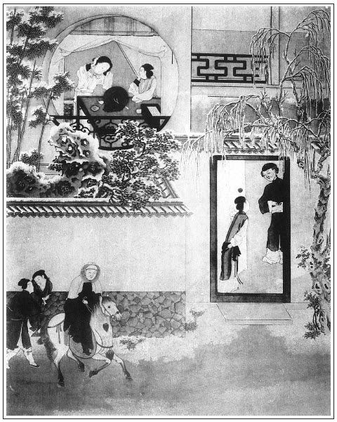

張回此回接寫尚小塘、聶兩湖，為溫秀才作餘波，不知已為賁四嫂作流紅地也。夫殘花成葉，片片隨波，轉眼成灰。會心者，上小塘徘徊獨步，蓮已成空，當尋貝葉之風，以悟眼前實地。而無如眼底湖光，猶作流芳之感。是以情牽不斷，又為殘葉惹相思也。惟小塘通兩湖，故葉葉浮來，可作水中之戰。
夫安郎中名忱，言安枕也。宋喬年，言斷送長年也。汪伯彥，言汪之北沿也。他如蔡蘊，罵其為男子中之媼，俗言婆婆媽媽是也。黃葆者，罵其為保兒也。
賁四嫂作帶水之戰，卻用汪伯彥、雷起元、安忱同拜。要請趙霆，一似閒中一交遊；再不然雲寫西門之財勢，為眾人所垂涎足矣。不知總為帶水之葉作指點也。蓋雲汪北沿，當雷聲起元之正月，而安枕以戰帶水之貝葉，不知潛地之雷霆已動，又換一番韶光。區區水面殘葉，能有幾日浮蕩？而殷殷顧盼於小塘兩湖之上，以作傷心語哉？
寫殘葉，必寫先踏雪訪愛月何也？蓋必雪月交輝，而蓮葉始全落空，梅花乃獨放也。又為下文春梅之過文，亦無不可也。
月娘名月，而愛月亦名月，何也？蓋言月缺復圓，花落復開，人死難活。前文六十五回之《普天樂》已明明言之矣。月後加一「愛」字，便是老人所見之月，令人眼淚盈把，不能追回少年之花陰寂寂時也。
此回寫雲理守，是言雲遮月之意，故後文結果月娘以往雲家去遇普淨師也。
忽入來友兒。夫「三友」，乃花間之雀、鶯、燕等鳥也。鳥來而花殘，況黃鸝乃四月之鳥，春已歸矣。故來友兒自王皇親家出來。夫王皇者，黃也，離王皇親而來，此黃鸝也。改名來爵，爵者，雀也，古「雀」字即「爵」，總是作者收拾花事之筆。而看者混帳看過，遂使作者暗笑也。
楊姑娘死者，楊去而李開，玉樓之去機已伏矣。
賁四女名長姐，嫁夏家。言葉長於夏為蓮葉也。蓮葉已無，只落枯莖矣，故後文接寫陳敬濟。
必言賁四嫂水戰，蓋言蓮葉在水。夫止餘蓮葉，則蓮花已空，而金蓮之死近矣，是皆金蓮的文字。
又虛描一楚雲，言同歸於夢，而夢實空也。況月與花有情，今雲來月閉，且雲來雪落，雪至花凋，不使其來，蓋既已夢矣，應須空寫，故用「鹿分鄭相，蝶化莊周」二句，自點雙睛。奈之何人不知之也？此夢直說出一百回月娘之夢。總之五十回以後，總是收結的文字。
此書寫數夢，以總結入月娘之一夢。如瓶兒死，有伯爵一夢，西門一夢，後書房一夢，何家一夢。瓶兒未死，先有子虛一夢；瓶兒臨死，又有迎春一夢。西門將死，又有月娘一夢。金蓮死。又有敬濟一夢，春梅一夢。及敬濟作花子，又自為一夢，周宣一夢。然後結入月娘雲理守之夢。不知先已有武松一夢在第九回內，然總不如楚雲之夢，寫得滑脫之極，使一書中眾人皆入夢中，又令人不知是寫一夢，卻又借莊周、鄭相二句，明明點出是夢。文字奇妙至此，亦難贊其如何奇妙之所以然矣。
詞曰：
梅共雪，歲暮斗新妝。張夾林氏、雪娥。月底素華同弄色，張夾月兒。風前輕片半含香，張夾春梅。不比柳花狂。張夾寒氣逼人。
雙雀影，堪比雪衣娘。張夾春鴻、來爵。六出光中曾結伴，張夾春鴻。百花頭上解尋芳，張夾來爵。爭似兩鴛鴦。張夾蕭瑟景象。
──右調《望江南》

話說溫秀才求見西門慶不得，自知慚愧，隨移家小，搬過舊家去了。張夾將「熱」頓住，接寫踏雪訪月，極言其「冷」也。西門慶收拾書院，做了客坐，不在話下。
一日，尚舉人來拜辭，上京會試，問西門慶借皮箱氈衫。西門慶陪坐待茶，因說起喬大戶、雲理守：「兩位捨親，一受義官，一受祖職，見任管事，欲求兩篇軸文奉賀。不知老翁可有相知否？借重一言，學生具幣禮相求。」尚舉人笑道：「老翁何用禮，學生敝同窗聶兩湖，見在武庫肄業，與小兒為師，本領雜作極富。學生就與他說，老翁差盛使持軸來就是了。」西門慶連忙致謝。茶畢起身。西門慶隨即封了兩方手帕、五錢白金，差琴童送軸子並氈衫、皮箱，到尚舉人處放下。那消兩日，寫成軸文差人送來。西門慶掛在壁上，但見金字輝煌，文不加點，心中大喜。只見應伯爵來問：「喬大戶與雲二哥的事，幾時舉行？軸文做了不曾？溫老先兒怎的連日不見？」西門慶道：「又題什麼溫老先兒，通是個狗類之人！」如此這般，告訴一遍。伯爵道：「哥，我說此人言過其實，張旁何處說來？虛浮之甚，早時你有後眼，不然，教他調壞了咱家小兒每了。」又問他：「二公賀軸，何人寫了？」西門慶道：「昨日尚小塘來拜我，說他朋友聶兩湖善於詞藻，央求聶兩湖作了。文章已寫了來，你瞧！」於是引伯爵到廳上觀看，喝采不已，又說道：「人情都全了，哥，你早送與人家，好預備。」西門慶道：「明日好日期，早差人送去。」
正說著，忽報：「夏老爹兒來拜辭，張夾夏天亦熱，今拜辭，蓋亦熱得盡情矣。說初六日起身去。小的回爹不在家。他說教對何老爹那裡說聲，差人那邊看守去。」西門慶看見帖兒上寫著「寅家晚生夏承恩頓首拜，謝辭」。西門慶道：「連尚舉人搭他家，就是兩分程儀香絹。」分付琴童：「連忙買了，教你姐夫封了，寫帖子送去。」正在書房中留伯爵吃飯，忽見平安兒慌慌張張拿進三個帖兒來報：「參議汪老爹、兵備雷老爹、郎中安老爹來拜。」西門慶看帖兒：「汪伯彥、張夾此處又言汪不厭也，言其頻來不厭耳。雷啟元、安忱拜。」張夾雷啟元，言此後即重和元年。接言安忱，言死期在即，猶安枕也。連忙穿衣繫帶。伯爵道：「哥，你有事，我去罷。」西門慶道：「我明日會你哩。」一面整衣出迎。三官員皆相讓而入。進入大廳，敘禮，道及向日叨擾之事。少頃茶罷，坐話間，安郎中便道：「雷東谷、汪少華並學生，又來干瀆：有浙江本府趙大尹，新升大理寺正，學生三人借尊府奉請，已發柬，定初九日。主家共五席。戲子學生那裡叫來。未知肯允諾否？」西門慶道：「老先生分付，學生掃門拱候。」繡眉照出。安郎中令吏取分資三兩遞上，西門慶令左右收了，張夾雷兵備請趙霆，合之為雷霆。蓋作者言所恨之人，奸邪誤國。一朝天開日朗，大發雷霆，使乾元一震之下，群奸遁跡。而西門之冷當如冰井矣。所以溫與夏才去，即接雷霆，必有雷霆而此輩方冷也。相送出門。雷東谷向西門慶道：「前日錢龍野書到，說那孫文相乃是貴夥計，學生已並他除開了，曾來相告不曾？」西門慶道：「正是，多承老先生費心，容當叩拜。」雷兵備道：「你我相愛間，何為多數。」言畢，相揖上轎而去。
原來潘金蓮自從當家管理銀錢，另定了一把新等子。每日小廝買進菜蔬來，拿到跟前與他瞧過，方數錢與他。繡眉雖算小，卻是當家人要著。他又不數，只教春梅數錢，提等子。小廝被春鴻罵的狗血淋頭，行動就說落，教西門慶打。以此眾小廝互相抱怨，都說在三娘手兒裡使錢好。張夾夫李嬌兒管錢，乃玉樓生日前事；金蓮管錢，又在玉樓生日後。作者喻言，有生以來，前前後後，無非一片邪淫人橫污，使錢於不堪也。故特於此處對照，煞有深意，又是千里遙對章法。
卻說次日，西門慶衙門中散了，對何千戶說：「夏龍溪家小已是起身去了，長官可曾委人那裡看守門戶去？」何千戶道：「正是，昨日那邊著人來說，學生已令小價去了。」西門慶道：「今日同長官那邊看看去。」於是出衙門，並馬到了夏家宅內。家小已是去盡了，伴當在門首伺候。兩位官府下馬，進到廳上。西門慶引著何千戶前後觀看了，又到前邊花亭上，見一片空地，無甚花草。張夾春光去矣，所為玉階寂寞也。西門慶道：「長官到明日還收拾個耍子所在，栽些花柳，把這座亭子修理修理。」何千戶道：「這個已定。學生開春從新修整修整，蓋三間卷棚，早晚請長官來消閒散悶。」看了一回，分付家人收拾打掃，關閉門戶。不日寫書往東京回老公公話，趕年裡搬取家眷。西門慶作別回家。何千戶還歸衙門去了。到次日才搬行李來住，不在言表。
西門慶剛到家下馬，見何九買了一疋尺頭、四樣下飯、一罈酒來謝。張夾武二哥將至矣。一路紛紛寫來，總是不堪。又是劉內相差人送了一食盒蠟燭，二十張桌圍，八十股官香，一盒沉速料香，一壇自造內酒，一口鮮豬。張夾過年也。為上一襯，所謂遮蓋筆墨也。西門慶進門，劉公公家人就磕頭，說道：「家公公多多上覆，這些微禮，與老爹賞人。」西門慶道：「前日空過老公公，怎又送這厚禮來？」便令左右：「快收了，請管家等等兒。」少頃，畫童兒拿出一鍾茶來，打發吃了。西門慶封了五錢銀子賞錢，拿回帖，打發去了。一面請何九進去。西門慶見何九，一把手扯在廳上來。何九連忙倒身磕下頭去，道：「多蒙老爹天心，超生小人兄弟，感恩不淺。」請西門慶受禮，西門慶不肯受磕頭，拉起來，說道：「老九，你我舊人，快休如此。」就讓他坐。何九說道：「小人微末之人，豈敢僭坐。」只說立在旁邊。西門慶也站著，陪吃了一盞茶，說道：「老九，你如何又費心送禮來？我斷然不受，若有甚麼人欺負你，只顧來說，我替你出氣。倘縣中派你甚差事，我拿帖兒與你李老爹說。」何九道：「蒙老爹恩典，小人知道。小人如今也老了，差事已告與小人何欽頂替了。」西門慶道：「也罷，也罷，你清閒些好。」又說道：「既你不肯，我把這酒禮收了，那尺頭你還拿去，我也不留你坐了。」那何九千恩萬謝，拜辭去了。
西門慶就坐在廳上，看看打點禮物果盒、花紅羊酒、軸文並各人分資。先差玳安送往喬大戶家去，張夾卸去官哥。後叫王經送往雲理守家去。張夾渡下孝哥。玳安回來，喬家與了五錢銀子。王經到雲理守家，管待了茶食，與了一疋真青大布、一雙琴鞋，回「門下辱愛生」雙帖兒：「多上覆老爹，改日奉請。」西門慶滿心歡喜，到後邊月娘房中擺飯吃，因向月娘說：「賁四去了，吳二舅在獅子街賣貨，我今日倒閒，往那裡看看去。」月娘道：「你去不是，若是要酒菜兒，蚤使小廝來家說。」西門慶道：「我知道。」一面分付備馬，就戴著氈忠靖巾，貂鼠暖耳，綠絨補子氅褶，粉底皂靴，琴童、玳安跟隨，逕往獅子街來。到房子內，吳二舅與來昭正掛著花栲栳兒，發買綢絹、絨線、絲綿，擠一鋪子人做買賣，打發不開。西門慶下馬，看了看，走到後邊暖房內坐下。吳二舅走來作揖，因說：「一日也攢銀二三十兩。」西門慶又分付來昭妻一丈青：「二舅每日茶飯休要誤了。」來昭妻道：「逐日伺候酒飯，不敢有誤。」
西門慶見天色陰晦，彤雲密佈，冷氣侵人，張夾寫月兒一回為此四字。將有作雪的模樣。忽然想起要往鄭月兒家去，即令琴童：「騎馬家中取我的皮襖來，問你大娘，有酒菜兒稍一盒與你二舅吃。」琴童應諾。到家，不一時，取了貂鼠皮襖，並一盒酒菜來。西門慶陪二舅在房中吃了三杯，分付：「二舅，你晚夕在此上宿，慢慢再用。我家去罷。」於是帶上眼紗，騎馬，玳安、琴童跟隨，逕進勾欄，往鄭愛月兒家來。轉過東街口，只見天上紛紛揚揚，飄起一天瑞雪來。但見：
漠漠嚴寒匝地，這雪兒下得正好。扯絮撏綿，裁成片片，大如栲栳。見林間竹筍茆茨，爭些被他壓倒。富豪俠卻言：消災障猶嫌少。圍向那紅爐獸炭，穿的是貂裘繡襖。手撚梅花，唱道是國家祥瑞，不念貧民些小。張夾可知袁安非忘世者。高臥有幽人，吟詠多詩草。
西門慶踏著那亂瓊碎玉，進入勾欄，到於鄭愛月兒家門首下馬。只見丫鬟飛報進來，說：「老爹來了。」鄭媽媽看見，出來，至於中堂見禮，說道：「前日多謝老爹重禮，姐兒又在宅內打攪，又教他大娘、三娘賞他花翠汗巾。」西門慶道：「那日空了他來。」一面坐下。西門慶令玳安：「把馬牽進來，後邊院落安放。」老媽道：「請爹後邊明間坐罷。月姐才起來梳頭，只說老爹昨日來，到伺候了一日，張夾補出邇者月兒之密，以見西門於林氏得意殺也。今日他心中有些不快，起來的遲些。」這西門慶一面進入他後邊明間內，但見綠窗半啟、氈幙低張，地平上黃銅大盆生著炭火。西門慶坐在正面椅上。先是鄭愛香兒出來相見了，遞了茶。然後愛月兒才出來，頭挽一窩絲杭州纘翠梅花鈕兒，金鈒釵兒，海獺臥兔兒。打扮的霧靄雲鬟，粉妝玉琢。笑嘻嘻向西門慶道了萬福，說道：「爹，我那一日來晚了。緊自前邊散的遲，到後邊，大娘又只顧不放俺每，留著吃飯，來家有三更天了。」西門慶笑道：「小油嘴兒，你倒和李桂姐兩個把應花子打的好響瓜兒。」張夾補出。鄭愛月兒道：「誰教他怪叨嘮，在酒席上屎口兒傷俺每來！那一日祝麻子也醉了，哄我，要送俺每來。我便說：『沒爹這裡燈籠送俺每，蔣胖子吊在陰溝裡──缺臭了你了。』」西門慶道：「我昨日聽見洪四兒說，祝麻子又會著王三官兒，大街上請了榮嬌兒。」鄭月兒道：「只在榮嬌兒家歇了一夜，燒了一炷香，不去了。如今還在秦玉芝兒走著哩。」說了一回話，道：「爹，只怕你冷，往房裡坐。」
這西門慶到於房中，脫去貂裘，和粉頭圍爐共坐，房中香氣襲人。須臾，丫頭拿了三甌兒黃芽韭菜肉包一寸大的水角兒來。姊妹二人陪西門慶，每人吃了一甌兒。愛月兒又撥上半甌兒，添與西門慶。西門慶道：「我勾了，才吃了兩個點心來了。心裡要來你這裡走走，不想恰好天氣又落下雪來了。」愛月兒道：「爹前日不會下我？我昨日等了一日不見爹，不想爹今日才來。」西門慶道：「昨日家中有兩位士夫來望，亂著就不曾來得。」愛月兒道：「我要問爹，有貂鼠買個兒與我，我要做了圍脖兒戴。」西門慶道：「不打緊，昨日韓夥計打遼東來，送了我幾個好貂鼠。你娘們都沒圍脖兒，到明日一總做了，送一個來與你。」愛香兒道：「爹只認的月姐，就不送與我一個兒。」張夾逼肖。西門慶道：「你姊妹兩個一家一個。」繡眉問著的就送，才算子弟，知今人不掛炭，都是稱撒漫矣。張夾假至誠口吻，不謂西門亦然。於是愛香、愛月兒連忙起身道了萬福。西門慶分付：「休見了桂姐、銀姐說。」張夾曾幾何時，而歌舞非復舊時人矣。鄭月兒道：「我知道。」因說：「前日李桂姐見吳銀兒在那裡過夜，問我他幾時來的，我沒瞞他，教我說：『昨日請周爺，俺每四個都在這裡唱了一日。爹說有王三官兒在這裡，不好請你的。張夾刻極。是月兒得意語。又有月無桂，是冬月非秋月，可想月娘當為含悲矣。今日是親朋會中人吃酒，才請你來唱。』他一聲兒也沒言語。」西門慶道：「你這個回的他好。張夾所以與月兒好也。前日李銘，我也不要他唱來，再三央及你應二爹來說。落後你三娘生日，桂姐買了一分禮來，再三與我陪不是。你娘們說著，我不理他。昨日我竟留下銀姐，使他知道。」愛月兒道：「不知三娘生日，我失誤了人情。」西門慶道：「明日你雲老爹擺酒，你再和銀姐來唱一日。」愛月兒道：「爹分付，我去。」說了回話，粉頭取出三十二扇象牙牌來，和西門慶在炕氈條上抹牌頑耍。愛香兒也坐在旁邊同抹。三人抹了回牌，須臾，擺上酒來，愛香與愛月兒一邊一個捧酒，不免箏排雁柱，款跨鮫綃，姊妹兩個彈唱。唱了一套，姐妹兩個又拿上骰盆兒來，和西門慶搶紅頑笑。杯來盞去，各添春色。西門慶忽看見鄭愛月兒房中，床旁側錦屏風上，掛著一軸《愛月美人圖》，題詩一首：
有美人兮迥出群，輕風斜拂石榴裙。
花開金谷春三月，月轉花陰夜十分。
玉雪精神聯仲琰，瓊林才貌過文君。
少年情思應須慕，莫使無心托白雲。繡眉王三泉此詩，較蔡狀元尚通。張夾回首百年，傷心黃土。
三泉主人醉筆
西門慶看了，便問：「三泉主人是王三官兒的號？」慌的鄭愛月兒連忙摭說道：張夾是月兒漏空處。「這還是他舊時寫下的。他如今不號三泉了，號小軒了。繡眉今之號軒、亭、橋、泉者，熟讀此書者也。他告人說，學爹說：『我號四泉，他怎的號三泉？』他恐怕爹惱，因此改了號小軒。」一面走向前，取筆過來，把那「三」字就塗抹了。張夾本意借三官以間桂兒，幾乎自露馬腳，寫盡人情之假。西門慶滿心歡喜，繡旁歡喜是何主意？說道：「我並不知他改號一節。」粉頭道：「我聽見他對一個人說來，我才曉的。說他去世的父親號逸軒，他故此改號小軒。」
說畢，張夾尊西門處，月兒如何得聞，又是漏空處。鄭愛香兒往下邊去了，獨有愛月兒陪西門慶在房內。兩個並肩疊股，搶紅飲酒，因說起林太太來，怎的大量，好風月：「我在他家吃酒，那日王三官請我到後邊拜見。還是他主意，教三官拜認我做義父，教我受他禮，委託我指教他成人。」繡旁好說。粉頭拍手大笑道：「還虧我指與爹這條路兒，到明日，連三官兒娘子不怕不屬了爹。」繡旁可惡。張旁可惡。西門慶道：「我到明日，我先燒與他一炷香。張夾「先」字奇絕。後則三官娘子也。到正月裡，請他和三官娘子往我家看燈吃酒，看他去不去。」粉頭道：「爹，你還不知三官娘子生的怎樣標緻，就是個燈人兒也沒他那一段風流妖艷。今年十九歲兒，只在家中守寡，王三官兒通不著家。繡旁可恨。爹，你肯用些工夫兒，不愁不是你的人。」兩個說話之間，相挨相湊。只見丫鬟又拿上許多細果碟兒來，粉頭親手奉與西門慶下酒。又用舌頭噙鳳香蜜餅送入他口中，又用纖手解開西門慶褲帶，露出那話來，教他弄。那話猙獰跳腦，紫漒光鮮，西門慶令他品之。這粉頭真個低垂粉項，輕啟朱唇，半吞半吐，或進或出，嗚咂有聲，品弄了一回。靈犀已透，淫心似火，便欲交歡。粉頭便往後邊去了。西門慶出房更衣，見雪越下得甚緊。回到房中，丫鬟向前打發脫靴解帶，先上牙床。粉頭澡牝回來，掩上雙扉，共入鴛帳。
正是：
得多少動人春色嬌還媚，惹蝶芳心軟欲濃。
有詩為證：
聚散無憑在夢中，起來殘燭映紗紅。
鍾情自古多神合，誰道陽台路不通。
兩個雲雨歡娛，到一更時分起來。整衣理鬢，丫鬟復釃美酒，重整佳餚，又飲勾幾杯。問玳安：「有燈籠、傘沒有？」玳安道：「琴童家去取燈籠、傘來了。」這西門慶方才作別，鴇子、粉頭相送出門，看著上馬。鄭月兒揚聲叫道：「爹若叫我，早些來說。」張夾明使桂兒知其寵也。西門慶道：「我知道。」一面上馬，打著傘出院門，一路踏雪到家中。對著吳月娘，只說在獅子街和吳二舅飲酒，不在話下。一宿晚景題過。
到次日，卻是初八日，打聽何千戶行李，都搬過夏家房子內去了，西門慶送了四盒細茶食、五錢折帕賀儀過去。只見應伯爵驀地走來。西門慶見雪晴，風色甚冷，張夾一路總是引入「冷」字。留他前邊書房中向火，叫小廝拿菜兒，留他吃粥，因說道：「昨日喬親家、雲二哥禮並折帕，都送去了。你的人情，我也替你封了二錢出上了。你不消與他罷，只等發柬請吃酒。」應伯爵舉手謝了，因問：「昨日安大人三位來做甚麼？那兩位是何人？」西門慶道：「那兩個，一個是雷兵備，一個是汪參議，都是浙江人，要在我這裡擺酒。明日請杭州趙霆知府，張夾雷霆共至其家，此仁人志士之所深幸有此一日也。新升京堂大理寺丞，是他每本府父母官，相處分上，又不可回他的。通身只三兩分資。」伯爵道：「大凡文職好細，三兩銀子勾做甚麼！哥少不得賠些兒。」西門慶道：「這雷兵備，就是問黃四小舅子孫文相的，昨日還對我題起開除他罪名哩。」伯爵道：「你說他不仔細，如今還記著，折准擺這席酒才罷了。」繡眉肯准折的還是清廉官。
說話之間，伯爵叫：「應寶，你叫那個人來見你大爹。」西門慶便問：「是何人？」伯爵道：「一個小後生，倒也是舊人家出身。父母都沒了，自幼在王皇親宅內答應。已有了媳婦兒，因在莊子上和一般家人不和，出來了。張夾豈非亦如惠祥怒罵乎？如今閒著，做不的甚麼。他與應寶是朋友，央及應寶要投個人家。今早應寶對我說：『爹倒好舉薦與大爹宅內答應。』我便說：『不知你大爹用不用？』」因問應寶：「他叫甚麼名字？你叫他進來。」應寶道：「他姓來，叫來友兒。」只見那來友兒，扒在地上磕了個頭起來，簾外站立。伯爵道：「若論他這身材膂力盡有，掇輕負重卻去的。」因問：「你多少年紀了？」來友兒道：「小的二十歲了。」又問：「你媳婦沒子女？」那人道：「只光兩口兒。」應寶道：「不瞞爹說，他媳婦才十九歲兒，廚灶針線，大小衣裳都會做。」西門慶見那人低頭並足，為人樸實，便道：「既是你應二爹來說，用心在我這裡答應。」分付：「揀個好日期，寫紙文書，兩口兒搬進來罷。」那來友兒磕了個頭。西門慶就叫琴童兒領到後邊，見月娘眾人磕頭去。月娘就把來旺兒原住的那一間房與他居住。張夾明為後文一映，卻是為蕙蓮一結。兩相對照，寫得有遇有不遇之別，然而又是千里一筆也。伯爵坐了回，家去了。應寶同他寫了一紙投身文書，交與西門慶收了，改名來爵，張夾花之友者雀也，雀來而花謝矣。不在話下。
卻說賁四娘子，自從他家長兒與了夏家，每日買東買西，只央及平安兒和來安、畫童兒。西門慶家中這些大官兒，常在他屋裡打平和兒吃酒。賁四娘子和氣，就定出菜兒來，或要茶水，應手而至。就是賁四一時鋪中歸來撞見，亦不見怪。張夾道國之東施。以此今日他不在家，使著那個不替他動？玳安兒與平安兒，在他屋裡坐的更多。
初九日，西門慶與安郎中、汪參議、雷兵備擺酒，請趙知府，俱不必細說。張夾先虛寫一筆，下文即入。那日早辰，來爵兩口兒就搬進來。他媳婦兒後邊見月娘眾人磕頭。月娘見他穿著紫綢襖，青布披襖，綠布裙子，生的五短身材，瓜子面皮兒，搽脂抹粉，纏的兩隻腳翹翹的，問起來，諸般針指都會做。取了他個名字，叫做惠元，與惠秀、惠祥一遞三日上灶，不題。
一日，門外楊姑娘沒了。張夾楊去而李來矣。安童兒來報喪。西門慶整治了一張插桌，三牲湯飯，又封了五兩香儀。吳月娘、李嬌兒、孟玉樓、潘金蓮四頂轎子，都往北邊與他燒紙弔孝，琴童兒、棋童兒、來爵兒、來安兒四個，都跟轎子，不在家。西門慶在對過段鋪子書房內，看著毛襖匠與月娘做貂鼠圍脖，先攢出一個圍脖兒，使玳安送與院中鄭月兒去，封了十兩銀子與他過節。鄭家管待酒饌，與了他三錢銀子。玳安走來，回西門慶話，說：「月姨多上覆，多謝了，前日空過了爹來。與了小的三錢銀子。」西門慶道：「你收了罷。」因問他：「賁四不在家，你頭裡從他屋裡出來做甚麼？」玳安道：「賁四娘子從他女孩兒嫁了，張夾又對愛姐，自是特犯六兒。沒人使，常央及小的每替他買買甚麼兒。」西門慶道：「他既沒人使，你每替他勤勤兒也罷。」又悄悄向玳安道：「你慢慢和他說，如此這般，爹要來看你看兒，你心下如何？看他怎的說。他若肯了，你問他討個汗巾兒來與我。」張夾上文用文嫂，蓋蜂媒。此則明用蝶使也。玳安道：「小的知道了。」領了西門慶言語，應諾下去。
西門慶就走到家中來。只見王經向顧銀鋪內取了金赤虎，並四對金頭銀簪兒，交與西門慶。西門慶留下兩對在書房內，餘者袖進李瓶兒房內，與了如意兒那赤虎，又是一對簪兒。把那一對簪兒就與了迎春。二人接了，連忙磕頭。西門慶就令迎春取飯去。須臾，拿飯來吃了，出來又到書房內坐下。只見玳安慢慢走到跟前，見王經在旁，不言語。西門慶使王經後邊取茶去。那玳安方說：「小的將爹言語對他說了，他笑了。張夾一笑姻緣，寫得逼肖。約會晚上些伺候，等爹進去。叫小的拿了這汗巾兒來。」西門慶見紅綿紙兒，包著一方紅綾織錦回紋汗巾兒，聞了聞噴鼻香，滿心歡喜，連忙袖了。只見王經拿茶來，吃了，又走過對門，看匠人做生活去。
忽報：「花大舅來了。」西門慶道：「請過來這邊坐。」花子由走到書房暖閣兒裡，作揖坐下。致謝外日相擾。敘話間，畫童兒拿過茶來吃了。花子由道：「門外一個客人，有五百包無錫米，凍了河，緊等要賣了回家去。我想著姐夫，倒好買下等價錢。」張夾極言其冷也。西門慶道：「我平白要他做甚麼？凍河還沒人要，到開河船來了，越發價錢跌了。如今家中也沒銀子。」即分付玳安：「收拾放桌兒，家中說，看菜兒來。」一面使畫童兒：「請你應二爹來，陪你花爹坐。」不一時，伯爵來到。三人共在一處，圍爐飲酒。又叫烙了兩炷餅吃，良久，只見吳道官徒弟應春，送節禮疏誥來。西門慶請來同坐吃酒。就攬李瓶兒百日經，與他銀子去。吃至日落時分，花子由和應春二人先起身去了。次後甘夥計收了鋪子，又請來坐，與伯爵擲骰猜枚談話，不覺到掌燈已後。吳月娘眾人轎子到了，來安走來回話。伯爵道：「嫂子們今日都往那裡去來？」西門慶道：「楊姑娘沒了，今日三日唸經，我這裡備了張祭卓，又封了香儀兒，都去弔問。」伯爵道：「他老人家也高壽了。」西門慶道：「敢也有七十五六。男花女花都沒有，只靠侄兒那裡養活，材兒也是我替他備下這幾年了。」伯爵道：「好好，老人家有了黃金入櫃，就是一場事了，哥的大陰騭。」說畢，酒過數巡，伯爵與甘夥計作辭去了。西門慶就起身走過來，分付後生王顯：「仔細火燭。」張夾到賁四嫂家，必分付王顯，明言背面落水，顯黃一葉，見春光已去，諸事冰冷也。文旁分明「王」字要作「黃」字，講不通乃爾。王顯道：「小的知道。」看著把門關上了。
這西門慶見沒人，兩三步就走入賁四家來。只見賁四娘子兒在門首獨自站立已久，見對門關的門響，西門慶從黑影中走至跟前。這婦人連忙把封門一開，西門慶鑽入裡面。婦人還扯上封門，說道：「爹請裡邊紙門內坐罷。」原來裡間隔扇廂著後半間，紙門內又有個小炕兒，籠著旺旺的火。張夾總是冷意。桌上點著燈，兩邊護炕糊的雪白。婦人勒著翠藍銷金箍兒，上穿紫綢襖，青綃絲披襖，玉色綃裙子，向前與西門慶道了萬福，連忙遞了一盞茶與西門慶吃，因悄悄說：「只怕隔壁韓嫂兒知道。」西門慶道：「不妨事。黑影子裡他那裡曉的。」繡眉有本者如是。於是不由分說，把婦人摟到懷中就親嘴。拉過枕頭來，解衣按在炕沿子上，扛起腿來就聳。那話上已束著托子，剛插入牝中，就拽了幾拽，婦人下邊淫水直流，把一條藍布褲子都濕了。西門慶拽出那話來，向順袋內取出包兒顫聲嬌來，蘸了些在龜頭上，攮進去，方才澀住淫津，肆行抽拽。婦人雙手扳著西門慶肩膊，張夾是炕沿行房者。兩廂迎湊，在下揚聲顫語，呻吟不絕。這西門慶乘著酒興，架起兩腿在胳膊上，只顧沒稜露腦，銳進長驅，肆行扇蹦，何止二三百度。須臾，弄的婦人云髻蓬鬆，舌尖冰冷，口不能言。西門慶則氣喘吁吁，靈龜暢美，一洩如注。張夾是初會情景。良久，拽出那話來，淫水隨出，用帕搽之。兩個整衣繫帶，復理殘妝。西門慶向袖中掏出五六兩一包碎銀子，又是兩對金頭簪兒，遞與婦人節間買花翠帶。張夾一路寫「冷」，寫「節」，一絲不紊。婦人拜謝了，悄悄打發出來。那邊玳安在鋪子裡，專心只聽這邊門環兒響，張夾情景逼真。便開大門，放西門慶進來。自知更無一人曉的。後次朝來暮往，也入港一二次。
正是：
若要人不知，除非己莫為。
不想被韓嫂兒冷眼睃見，傳的後邊金蓮知道了。張夾一部《金瓶》，總是此等作章法，然亦人情實實如此者。這金蓮亦不說破他。
一日，臘月十五日，喬大戶家請吃酒。西門慶會同應伯爵、吳大舅一齊起身。那日有許多親朋看戲飲酒，至二更方散。第二日，每家一張卓面，俱不必細說。
單表崔本治了二千兩湖州綢絹貨物，臘月初旬起身，僱船裝載，趕至臨清馬頭。教後生榮海看守貨物，便雇頭口來家，取車稅銀兩，到門首下頭口。琴童道：「崔大哥來了，請廳上坐。爹在對門房子裡，等我請去。」一面走到對門，不見西門慶，因問平安兒，平安兒道：「爹敢進後邊去了。」這琴童走到上房問月娘，月娘道：「見鬼的，你爹從蚤辰出去，再幾時進來？」又到各房裡，並花園、書房都瞧遍了，沒有。琴童在大門首揚聲道：「省恐殺人，不知爹往那裡去了，白尋不著！大白日裡把爹來不見了。張夾白描一筆。崔大哥來了這一日，只顧教他坐著。」那玳安分明知道，只不做聲。繡眉絕不說出在那裡，妙甚。不想西門慶忽從前邊進來，把眾人諕了一驚。原來西門慶在賁四屋裡入港，才出來。那平安打發西門慶進去了，望著琴童兒吐舌頭，都替他捏兩把汗道：「管情崔大哥去了，有幾下子打。」不想西門慶走到廳上，崔本見了，磕頭畢，交了書帳，說：「船到馬頭，少車稅銀兩。我從臘月初一日起身，在揚州與他兩個分路。張夾崔本先來，一影后文。道國拐財，所以名崔本。蓋苗員外摧本錢也。他每往杭州去了，俺每都到苗青家住了兩日。」因說：「苗青替老爹使了十兩銀子，抬了揚州衛一個千戶家女子，十六歲了，名喚楚雲。張旁即用千戶女，可傷西門之心。張夾又虛描一人，蓋彩雲易散故也。說不盡生的花如臉，玉如肌，星如眼，月如眉，腰如柳，襪如鉤，兩隻腳兒，恰剛三寸。端的有沉魚落雁之容，閉月羞花之貌。腹中有三千小曲，八百大曲。苗青如此還養在家，替他打妝奩，治衣服。待開春，韓夥計、保官兒船上帶來，伏侍老爹，消愁解悶。」西門慶聽了，滿心歡喜，說道：「你船上稍了來也罷。張夾等不的矣。又費煩他治甚衣服，打甚妝奩，愁我家沒有？」於是恨不的騰雲展翅，飛上揚州，搬取嬌姿，賞心樂事。
正是：
鹿分鄭相應難辨，蝶化莊周未可知。張夾明明說出楚雲之名，無非一夢也。
有詩為證：
聞道揚州一楚雲，偶憑青鳥語來真。
不知好物都離隔，試把梅花問主人。
西門慶陪崔本吃了飯，兌了五十兩銀子做車稅錢，又寫書與錢主事，煩他青目。崔本言訖，作辭，往喬大戶家回話去了。平安見西門慶不尋琴童兒，都說：「我兒，你不知有多少造化。爹今日不知有甚事喜歡，張夾一語寫賁四嫂及楚雲兩處。若不是，綁著鬼有幾下打。」琴童笑道：「只你知爹性兒。」
比及起了貨，來到獅子街卸下，就是下旬時分。西門慶正在家打發送節禮，忽見荊都監差人拿帖兒來，問：「宋大巡題本已上京數日，繡眉絕妙書劄。未知旨意下來不曾？伏惟老翁差人察院衙門一打聽為妙。」西門慶即差答應節級，拿了五錢銀子，往巡按公衙打聽。果然昨日東京邸報下來，寫抄得一紙，全報來與西門慶觀看。上面寫著：
山東巡按監察御史宋喬年一本：循例舉劾地方文武官員，以勵人心，以隆聖治事。竊惟吏以撫民，武以御亂，所以保障地方，以司民命者也。苟非其人，則處置乖方，民受其害，國何賴焉！臣奉命按臨山東等處，吏政民瘼，監司守禦，無不留心咨訪。覆命按撫大臣，詳加鑒別，各官賢否，頗得其實。茲當差滿之期，敢不一一陳之。訪得山東左布政陳四箴張夾酒色財氣。操履忠貞，撫民有方；廉使趙訥，張夾一部伶牙利齒。綱紀肅清，士民服習；提學副使陳正匯，張夾一部乾女兒。操砥礪之行，嚴督率之條；兵備副使雷啟元，張夾蓋不能殺之、割之，安得雙手拿其頭，打幾千栗暴哉！軍民鹹服其恩威，僚幕悉推其練達；濟南府知府張叔夜，張夾映《水滸》，且伏結文，兵亂與武二收煞。經濟可觀，才堪司牧；東平府知府胡師文，張夾溫葵軒等。居任清慎，視民如傷。此數臣者，皆當薦獎而優擢者也。又訪得左參議馮廷鵠，傴僂之形，桑榆之景，張夾是結語。形若木偶，尚肆貪婪；東昌府知府徐松，縱父妾而通賄，譭謗騰於公堂，慕羨餘而誅求，詈言遍於閭裡。此二臣者，所當亟賜置斥者也。再訪得左軍院僉書守備周秀，器宇恢弘，操持老練，軍心允服，賊盜潛消；濟州兵馬都監荊忠，年力精強，才猶練達，冠武科而稱為儒將，勝算可以臨戎，號令而極其嚴明，長策卒能禦侮。此二臣者，所當亟賜遷擢者也。清河縣千戶吳鎧，以練達之才，得衛守之法，驅兵以擣中堅，靡攻不克；儲食以資糧餉，無人不飽。推心置腹，人思效命。實一方之保障，為國家之屏藩。宜特加超擢，鼓舞臣寮。陛下如以臣言可采，舉而行之，庶幾官爵不濫而人思奮，守牧得人而聖治有賴矣。等因。奉欽依：該部知道。續該吏、兵二部題前事：看得御史宋喬年所奏內，劾舉地方文武官員，無非體國之忠，出於公論，詢訪事實，以裨聖治之事。優乞聖明俯賜施行，天下幸甚，生民幸甚。奉欽依：擬行。
西門慶一見，滿心歡喜。拿著邸報，走到後邊，對月娘說：「宋道長本下來了。已是保舉你哥升指揮僉事，見任管屯。周守備與荊大人都有獎勵，轉副參、統制之任。如今快使小廝請他來，對他說聲。」月娘道：「你使人請去，我交丫鬟看下酒菜兒。我愁他這一上任，也要銀子使。」張夾月娘無非在利。西門慶道：「不打緊，我借與他幾兩銀子也罷了。」不一時，請得吳大舅到了。西門慶送那題奏旨意與他瞧。吳大舅連忙拜謝西門慶與月娘，說道：「多累姐夫、姐姐扶持，恩當重報，不敢有忘。」西門慶道：「大舅，你若上任擺酒沒銀子，我這裡兌些去使。」那大舅又作揖謝了。於是就在月娘房中，安排上酒來吃酒。月娘也在旁邊陪坐。西門慶即令陳敬濟把全抄寫了一本，與大舅拿著。即差玳安拿帖送邸報往荊都監、周守禦兩家報喜去。正是：
勸君不費鐫研石，路上行人口似碑。
文回
一
作者於有意無意之間，描寫諸人言談舉止、體態情性，各還他一個本來面目。初不加一字褒貶，而其人自躍躍於字裡行間，如或見其貌，如或聞其聲，是在明眼人之識之而已。或謂《水滸傳》寫一人有一〔人〕身份，《金瓶梅》亦何獨不然哉！金之薄，瓶之柔，梅之傲，皆婦人本性，與男子不同，是在其為夫者剛克柔克耳。但瓶、梅尚可轉移，蓮則斷斷不可存留於世間，遭之者死，見之者病，誠然禍水也。
小批每不滿意月娘而偏袒春梅，不知何故？
二
文禹門又云：上一回宋御史請客，此一回安郎中請客，是看旁人排場，上一回潘金蓮呼老王，此一回西門慶呼老九，是顯自己勢力。中間又來孫文相一層，明明借他人之權勢，成自己之恩威。果能是是非非，尚且不可，而況曲直顛倒，賣法徇私，諸官皆曰可殺，西門慶能邀末減乎？
《水滸傳》中，西門慶有結交官府一語，要不過本地方官耳。此書擴充而語之，故屢屢以借地迎送，此其結交之因也。心思曲折，筆墨亦覺生動，真不槐為作家也。
若考本人之所行所為，非嫖即偷，於此一回並寫之。諺語有云：天堂有路不去走，地獄無門自入來。其即西門慶之謂乎？諸惡莫作，眾善奉行，西門慶反而為之。此等人物，竟令其有妻守節，有子出家，未免賞惡獎淫矣。批書者處處不放月娘，其即此意也夫！
按：前評寫於光緒五年（1879）五月十八日。後評寫於光緒六年（1880）三月二十七日。